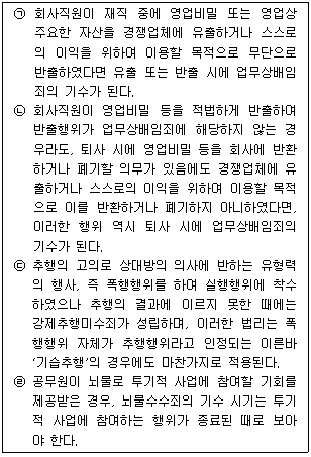
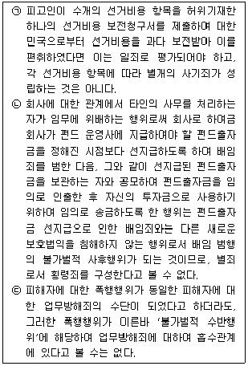
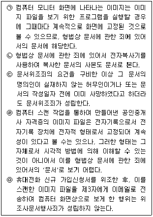
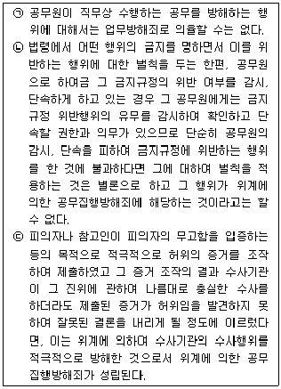

경찰공무원(순경)-형법 (2017-09-02 기출문제)
1. 죄형법정주의에 대한 설명으로 가장 적절하지 않은 것은?(다툼이 있는 경우 판례에 의함)
- 구성요건이 신설된 상습강제추행죄가 시행되기 이전의 범행은 상습강제추행죄로는 처벌할 수 없고 행위시법에 기초하여 강제추행죄로 처벌할 수 있을 뿐이며, 이 경우 그 소추요건도 상습강제추행죄에 관한 것이 아니라 강제추행죄에 관한 것이 구비되어야 한다.
- 허위로 신고한 사실이 무고행위 당시 형사처분의 대상이 될 수 있었던 경우에는 무고죄는 기수에 이르고, 이후 그러한 사실이 형사범죄가 되지 않는 것으로 판례가 변경되었더라도 특별한 사정이 없는 한 이미 성립한 무고죄에는 영향을 미치지 않는다.
- 가정폭력범죄의 처벌 등에 관한 특례법상 사회봉사명령을 부과하면서, 행위시법상 사회봉사명령 부과시간의 상한인 100시간을 초과하여 상한을 200시간으로 올린 신법을 적용한 것은 위법하다.
- 「외국환거래법」 제30조가 규정하는 몰수·추징의 대상은 범인이 해당 행위로 인하여 취득한 외국환 기타 지급수단 등을 뜻하고, 이는 범인이 외국환거래법에서 규제하는 행위로 인하여 취득한 외국환 등이 있을 때 이를 몰수하거나 추징한다는 취지이나, 여기서 취득이란 해당 범죄행위로 인하여 결과적으로 이를 취득한 때를 말한다고 제한적으로 해석할 필요는 없다.
(정답률: 72%)

2. 인과관계에 대한 설명으로 가장 적절하지 않은 것은?(다툼이 있는 경우 판례에 의함)
- 피고인이 주먹으로 피해자의 복부를 1회 강타하여 장파열로 인한 복막염으로 사망케 하였다면, 비록 의사의 수술지연 등 과실이 피해자의 사망의 공동원인이 되었다 하더라도 피고인의 행위가 사망의 결과에 대한 유력한 원인이 된 이상 그 폭행행위와 치사의 결과간에는 인과관계가 있다.
- 초지조성공사를 도급받은 수급인이 불경운작업(산불작업)을 하도급을 준 이후에 계속하여 그 작업을 감독하지 아니한 잘못이 있다 하더라도 이는 도급자에 대한 도급계약상의 책임이 아니라, 위 하수급인의 과실로 인하여 발생한 산림실화에 상당인과관계가 있는 과실이라고 할 수 있다.
- 어떤 행위라도 죄의 요소되는 위험발생에 연결되지 아니한 때에는 그 결과로 인하여 벌하지 아니한다.
- 피고인들이 공동하여 피해자를 폭행하여 당구장 3층에 있는 화장실에 숨어 있던 피해자를 다시 폭행하려고 피고인 갑은 화장실을 지키고, 피고인 을은 당구치는 기구로 문을 내려쳐 부수자 위협을 느낀 피해자가 화장실 창문 밖으로 숨으려다가 실족하여 떨어짐으로써 사망한 경우에는 피고인들의 위 폭행행위와 피해자의 사망 사이에는 인과관계가 있다.
(정답률: 87%)
3. 고의에 대한 설명으로 가장 적절하지 않은 것은?(다툼이 있는 경우 판례에 의함)
- 공무원이 여러 차례의 출장반복의 번거로움을 회피하고 민원사무를 신속히 처리한다는 방침에 따라 사전에 출장조사한 다음 출장조사 내용이 변동없다는 확신하에 출장복명서를 작성하고 다만 그 출장일자를 작성일자로 기재한 것이라면 허위공문서작성의 범의가 있었다고 볼 수 없다.
- 업무방해죄의 성립에 필요한 고의는 반드시 업무방해의 목적이나 계획적인 업무방해의 의도가 있어야만 하는 것은 아니고, 자신의 행위로 인하여 타인의 업무가 방해될 가능성 또는 위험에 대한 인식이나 예견으로 충분하다.
- 새로 목사로서 부임한 피고인이 전임목사에 관한 교회내의 불미스러운 소문의 진위를 확인하기 위하여 이를 교회집사들에게 물어보았다면, 이는 경험칙상 충분히 있을 수 있는 일로서 명예훼손의 고의없는 단순한 확인에 지나지 아니하여 사실의 적시라고 할 수 없다.
- 피고인이 인신구속에 관한 직무를 집행하는 사법경찰관으로서 체포 당시 상황을 고려하여 경험칙에 비추어 현저하게 합리성을 잃지 않은 채 판단하면 체포 요건이 충족되지 아니함을 충분히 알 수 있었는데도, 자신의 재량 범위를 벗어난다는 사실을 인식하고 그와 같은 결과를 용인한 채 사람을 체포하여 권리행사를 방해한 경우 직권남용체포죄와 직권남용권리행사방해죄의 고의는 인정되지 않는다.
(정답률: 85%)
4. 결과적 가중범에 대한 설명으로 가장 적절하지 않은 것은?(다툼이 있는 경우 판례에 의함)
- 수면제와 같은 약물을 투약하여 피해자를 일시적으로 수면 또는 의식불명 상태에 이르게 한 경우에도 약물로 인하여 피해자의 건강상태가 불량하게 변경되고 생활기능에 장애가 초래되었다면 자연적으로 의식을 회복하거나 외부적으로 드러난 상처가 없더라도 이는 강간치상죄나 강제추행치상죄에서 말하는 상해에 해당한다.
- 「형법」 제15조 제2항은 '결과로 인하여 형이 중할 죄에 있어서 그 결과의 발생을 예견할 수 없었을 때에는 중한 죄로 벌하지 아니한다'고 규정하고 있다.
- 기본범죄를 통하여 고의로 중한 결과를 발생하게 한 경우에 가중 처벌하는 부진정결과적가중범에서, 고의로 중한 결과를 발생하게 한 행위가 별도의 구성요건에 해당하고 그 고의범에 대하여 결과적가중범에 정한 형보다 더 무겁게 처벌하는 규정이 있는 경우에는 그 고의범과 결과적가중범이 실체적 경합관계에 있다.
- 결과적 가중범인 상해치사죄의 공동정범은 폭행 기타의 신체침해 행위를 공동으로 할 의사가 있으면 성립되고 결과를 공동으로 할 의사는 필요 없다.
(정답률: 76%)
5. 기수와 미수에 대한 설명이다. 아래 ㉠부터 ㉣까지의 설명 중 옳고 그름의 표시(O, X)가 바르게 된 것은?(다툼이 있는 경우 판례에 의함)

- ㉠(O), ㉡(X), ㉢(O), ㉣(O)
- ㉠(O), ㉡(X), ㉢(O), ㉣(X)
- ㉠(X), ㉡(O), ㉢(X), ㉣(X)
- ㉠(O), ㉡(O), ㉢(O), ㉣(O)
(정답률: 73%)
6. 예비ㆍ음모에 대한 설명으로 가장 적절하지 않은 것은?(다툼이 있는 경우 판례에 의함)
- 강도예비·음모죄가 성립하기 위해서는 예비·음모 행위자에게 미필적으로라도 '강도'를 할 목적이 있음이 인정되어야 하고, 그에 이르지 않고 단순히 '준강도'할 목적이 있음에 그치는 경우에는 강도예비·음모죄로 처벌할 수 없다.
- 형법상 폭발물사용죄와 미성년자약취·유인죄는 예비·음모의 처벌규정을 두고 있다.
- 피고인이 본범이 절취한 차량이라는 정을 알면서도 본범 등으로부터 그들이 위 차량을 이용하여 강도를 하려 함에 있어 차량을 운전해 달라는 부탁을 받고 위 차량을 운전해 준 경우, 피고인은 강도예비와 아울러 장물운반의 고의를 가지고 위와 같은 행위를 하였다고는 볼 수 없다.
- 피고인이 행사할 목적으로 미리 준비한 물건들과 옵세트인쇄기를 사용하여 한국은행권 100원권을 사진찍어 그 필름 원판 7매와 이를 확대하여 현상한 인화지 7매를 만들었음에 그쳤다면 아직 통화위조의 착수에는 이르지 아니하였고 그 준비단계에 불과하다.
(정답률: 74%)
7. 정범과 공범에 대한 설명으로 가장 적절하지 않은 것은?(다툼이 있는 경우 판례에 의함)
- 우연히 만난 자리에서 서로 협력하여 공동의 범의를 실현하려는 의사가 암묵적으로 상통하여 범행에 공동가공하더라도 공동정범은 성립된다.
- 보조 직무에 종사하는 공무원이 허위공문서를 기안하여 허위임을 모르는 작성권자의 결재를 받아 공문서를 완성한 때에는 허위공문서작성죄의 간접정범이 될 것이지만, 이러한 결재를 거치지 않고 임의로 작성권자의 직인 등을 부정 사용함으로써 공문서를 완성한 때에는 공문서위조죄는 성립하지 않는다.
- 배임증재의 공모공동정범이 다른 공모공동정범에 의하여 수재자에게 재물 또는 재산상 이익이 제공되는 방법을 구체적으로 몰랐다고 하더라도 공모관계를 부정할 수 없다.
- 「형법」 제127조는 공무원 또는 공무원이었던 자가 법령에 의한 직무상 비밀을 누설하는 행위만을 처벌하고 있을 뿐 직무상 비밀을 누설받은 상대방을 처벌하는 규정이 없는 점에 비추어, 직무상 비밀을 누설받은 자에 대하여는 공범에 관한 형법총칙 규정이 적용될 수 없다.
(정답률: 89%)
8. 교사와 방조에 대한 설명으로 가장 적절하지 않은 것은?(다툼이 있는 경우 판례에 의함)
- 종범은 정범이 실행행위에 착수하여 범행을 하는 과정에서 이를 방조한 경우뿐 아니라, 정범의 실행의 착수 이전에 장래의 실행행위를 미필적으로나마 예상하고 이를 용이하게 하기 위하여 방조한 경우에도 그 후 정범이 실행행위에 나아갔다면 성립할 수 있다.
- 공무원 또는 중재인이 부정한 청탁을 받고 제3자에게 뇌물을 제공하게 하고 제3자가 그러한 공무원 또는 중재인의 범죄행위를 알면서 방조한 경우에는 그에 대한 별도의 처벌규정이 없더라도 방조범에 관한 형법총칙의 규정이 적용되어 제3자뇌물수수방조죄가 인정될 수 있다.
- 피교사자가 교사자의 교사행위 당시에는 일응 범행을 승낙하지 아니한 것으로 보여진다 하더라도 이후 그 교사행위에 의하여 범행을 결의한 것으로 인정되는 이상 교사범의 성립에는 영향이 없다.
- 피무고자의 교사·방조 하에 제3자가 피무고자에 대한 허위의 사실을 신고한 경우에는 제3자의 행위는 무고죄의 구성요건에 해당하지 않아 무고죄를 구성하지 않고, 제3자를 교사·방조한 피무고자도 교사·방조범으로서의 죄책을 부담하지 않는다.
(정답률: 68%)
9. 죄수에 대한 설명으로 적절한 것을 모두 고른 것은?(다툼이 있는 경우 판례에 의함)

- ㉠
- ㉡㉢
- ㉠㉢
- ㉢
(정답률: 60%)
10. 「형법」상 형의 시효‧소멸에 대한 설명으로 가장 적절하지 않은 것은?
- 징역 또는 금고의 집행을 종료하거나 집행이 면제된 자가 피해자의 손해를 보상하고 자격정지 이상의 형을 받음이 없이 5년을 경과한 때에는 본인 또는 검사의 신청에 의하여 그 재판의 실효를 선고할 수 있다.
- 자격정지의 선고를 받은 자가 피해자의 손해를 보상하고 자격정지 이상의 형을 받음이 없이 정지기간의 2분의 1을 경과한 때에는 본인 또는 검사의 신청에 의하여 자격의 회복을 선고할 수 있다.
- 시효는 형이 확정된 후 그 형의 집행을 받지 아니한 자가 형의 집행을 면할 목적으로 국외에 있는 기간 동안은 진행되지 아니한다.
- 시효는 사형, 징역, 금고와 구류에 있어서는 수형자를 체포함으로, 벌금, 과료, 몰수와 추징에 있어서는 강제처분을 개시함으로 인하여 중단된다.
(정답률: 55%)
11. 다음 설명 중 가장 적절하지 않은 것은?(다툼이 있는 경우 판례에 의함)
- 정보보안과 소속 경찰관이 자신의 지위를 내세우면서 타인의 민사분쟁에 개입하여 빨리 채무를 변제하지 않으면 상부에 보고하여 문제를 삼겠다고 말한 경우, 이는 객관적으로 상대방이 공포심을 일으키기에 충분한 정도의 해악의 고지에 해당하므로 현실적으로 피해자가 공포심을 일으키지 않았다 하더라도 협박죄의 기수에 이르렀다고 볼 수 있다.
- 강제추행치상죄에 있어서의 상해는 피해자의 신체의 건강상태가 불량하게 변경되고 생활기능에 장애가 초래되는 것을 말하는 것으로서, 신체의 외모에 변화가 생겼다고 하더라도 신체의 생리적 기능에 장애를 초래하지 아니하는 이상 상해에 해당한다고 할 수 없다.
- 제왕절개 수술의 경우 '의학적으로 제왕절개 수술이 가능하였고 규범적으로 수술이 필요하였던 시기(時期)'는 판단하는 사람 및 상황에 따라 다를 수 있어, 분만개시 시점 즉, 사람의 시기(始期)도 불명확하게 되므로 이 시점을 분만의 시기(始期)로 볼 수는 없다.
- 사람을 살해한 다음 그 범죄의 흔적을 은폐하기 위하여 그 시체를 다른 장소로 옮겨 유기하였을 때에는 살인죄만 성립하고, 사체유기죄는 살인죄의 불가벌적 사후행위로서 별도로 성립하지 않는다.
(정답률: 85%)
12. 명예에 관한 죄에 대한 설명으로 가장 적절하지 않은 것은?(다툼이 있는 경우 판례에 의함)
- 형법상 사자의 명예훼손죄와 모욕죄는 고소가 있어야 공소를 제기할 수 있다.
- 명예훼손죄에 있어서의 사실의 적시는 가치판단이나 평가를 내용으로 하는 의견표현에 대치되는 개념이 아니다.
- 「형법」 제307조 제2항의 공연히 허위의 사실을 적시하여 사람의 명예를 훼손한 죄는 피해자의 명시한 의사에 반하여 공소를 제기할 수 없다.
- 피고인이 경찰관을 상대로 진정한 사건이 혐의인정되지 않아 내사종결 처리되었음에도 불구하고 공연히?사건을 조사한 경찰관이 내일부로 검찰청에서 구속영장이 떨어진다.?고 말한 것은 현재의 사실을 기초로 하거나 이에 대한 주장을 포함하여 장래의 일을 적시한 것으로 볼 수 있어 명예훼손죄에 있어서의 사실의 적시에 해당한다.
(정답률: 74%)
13. 업무방해죄에 대한 설명으로 가장 적절한 것은?(다툼이 있는 경우 판례에 의함)
- 쟁의행위로서 파업이 언제나 업무방해죄에 해당하는 것으로 볼 것은 아니고, 전후 사정과 경위 등에 비추어 사용자가 예측할 수 없는 시기에 전격적으로 이루어져 사용자의 사업운영에 심대한 혼란 내지 막대한 손해를 초래하는 등으로 사용자의 사업계속에 관한 자유의사가 제압·혼란될 수 있다고 평가할 수 있는 경우에 비로소 집단적 노무제공의 거부가 위력에 해당하여 업무방해죄가 성립한다.
- 업무방해죄에 있어 업무를 '방해한다'함은 업무의 집행 자체를 방해하는 것을 의미하고, 널리 업무의 경영을 저해하는 것을 포함하지는 않는다.
- 「형법」 제314조 제1항의 업무방해죄에서의 '위력'이라 함은 사람의 자유의사를 제압·혼란케 할 만한 유형적인 세력만을 의미하므로 무형적인 정치적 지위와 권세에 의한 압박은 이에 포함되지 아니한다.
- 특정 회사가 제공하는 게임사이트에서 정상적인 포커게임을 하고 있는 것처럼 가장하면서 통상적인 업무처리 과정에서 적발해 내기 어려운 사설 프로그램을 이용하여 약관상 양도가 금지되는 포커머니를 약속된 상대방에게 이전해 준 행위는 「형법」 제314조 제2항에 정한 '부정한 명령의 입력'에 해당하지만, 회사의 정상적인 게임사이트 운영 업무를 방해한 것이 아니므로 위계에 의한 업무방해죄는 구성하지 않는다.
(정답률: 79%)
14. 절도의 죄에 대한 설명으로 가장 적절하지 않은 것은?(다툼이 있는 경우 판례에 의함)
- 절도범인이 체포를 면탈할 목적으로 경찰관에게 폭행 협박을 가한 때에는 준강도죄와 공무집행방해죄를 구성하고 양죄는 상상적 경합관계에 있으나, 강도범인이 체포를 면탈할 목적으로 경찰관에게 폭행을 가한 때에는 강도죄와 공무집행방해죄는 실체적 경합관계에 있다.
- 타인과 공동소유관계에 있는 물건은 절도죄의 객체가 되는 타인의 재물에 속하지 아니한다.
- 주간에 사람의 주거 등에 침입하여 야간에 타인의 재물을 절취한 행위는 「형법」 제330조의 야간주거침입절도죄를 구성하지 않는다.
- 피고인이 피해자 경영의 금방에서 마치 귀금속을 구입할 것처럼 가장하여 피해자로부터 순금목걸이 등을 건네받은 다음 화장실에 갔다 오겠다는 핑계를 대고 도주한 것이라면 위 순금목걸이 등은 도주하기 전까지는 아직 피해자의 점유하에 있었다고 할 것이므로 이를 절도죄로 의율 처단한 것은 정당하다.
(정답률: 78%)
15. 사기죄에 대한 설명으로 가장 적절한 것은?(다툼이 있는 경우 판례에 의함)
- 사기도박에서 사기적인 방법으로 도금을 편취하려고 하는 자가 상대방에게 도박에 참가할 것을 권유하는 등 기망행위를 개시한 때에 실행의 착수가 있는 것으로 보아야 하지만, 그 후에 사기도박을 숨기기 위하여 정상적인 도박을 하였다면 이는 사기죄의 실행행위에 포함되지 아니한다.
- 사기죄는 타인을 기망하여 착오에 빠뜨리고 그 처분행위를 유발하여 재물을 교부받거나 재산상 이익을 얻음으로써 성립하는 것이고, 기망, 착오, 재산적 처분행위 사이에 인과관계를 필요로 하는 것은 아니다.
- 송금의뢰인이 수취인의 예금계좌에 계좌이체 등을 한 이후, 수취인이 은행에 대하여 예금반환을 청구함에 따라 은행이 수취인에게 그 예금을 지급하는 행위는 계좌이체금액 상당의 예금계약의 성립 및 그 예금채권 취득에 따른 것으로서 은행이 착오에 빠져 처분행위를 한 것이라고 볼 수 있으므로, 결국 이러한 행위는 은행을 피해자로 한 「형법」 제347조의 사기죄에 해당한다.
- 피고인이 보험사고에 해당할 수 있는 사고로 인하여 경미한 상해를 입었다고 하더라도 이를 기화로 보험금을 편취할 의사로 그 상해를 과장하여 병원에 장기간 입원하고 이를 이유로 실제 피해에 비하여 과다한 보험금을 지급받는 경우에는 그 보험금 전체에 대해 사기죄가 성립한다.
(정답률: 77%)
16. 횡령죄에 대한 설명으로 가장 적절하지 않은 것은?(다툼이 있는 경우 판례에 의함)
- 횡령죄에서 재물의 보관은 재물에 대한 사실상 또는 법률상 지배력이 있는 상태를 의미한다.
- 횡령죄는 다른 사람의 재물에 관한 소유권 등 본권을 보호법익으로 하고 법익침해의 위험이 있으면 침해의 결과가 발생되지 아니하더라도 성립하는 위험범이다.
- 소유권의 취득에 등록이 필요한 타인 소유의 차량을 인도받아 보관하고 있는 사람이 이를 사실상 처분하더라도 횡령죄는 성립하지 않고, 그 보관 위임자나 보관자가 차량의 등록명의자이어야만 횡령죄가 성립한다.
- 타인의 부동산을 명의신탁 받아 보관중인 자가 자신의 개인 채무변제에 사용할 돈을 차용하기 위해 위 부동산에 근저당권을 설정하여 횡령죄가 기수에 이르렀다 하더라도, 그 후 같은 부동산을 다른 사람에게 매도하는 행위는 위 선행행위와는 별도로 횡령죄를 구성한다.
(정답률: 81%)
17. 문서에 관한 죄에 대한 설명 중 옳고 그름의 표시(O, X)가 바르게 된 것은?(다툼이 있는 경우 판례에 의함)

- ㉠(O), ㉡(O), ㉢(X), ㉣(X), ㉤(O)
- ㉠(X), ㉡(O), ㉢(O), ㉣(O), ㉤(X)
- ㉠(X), ㉡(X), ㉢(O), ㉣(X), ㉤(O)
- ㉠(O), ㉡(X), ㉢(X), ㉣(O), ㉤(X)
(정답률: 72%)
18. 뇌물죄에 대한 설명으로 가장 적절한 것은?(다툼이 있는 경우 판례에 의함)
- 뇌물죄는 금품이 직무에 관하여 수수된 것뿐만 아니라 개개의 직무행위와 대가적 관계에 있어야 한다.
- 뇌물죄는 직무에 관한 청탁이나 부정한 행위를 필요로 하므로 수수된 금품의 뇌물성을 인정하는 데 특별한 청탁이 있어야만 한다.
- 뇌물죄에서 뇌물의 내용인 이익이라 함은 금전, 물품 기타의 재산적 이익뿐만 아니라 사람의 수요·욕망을 충족시키기에 족한 일체의 유형·무형의 이익을 포함하며 제공된 것이 성적 욕구의 충족이라고 하여 달리 볼 것이 아니다.
- 공무원이 얻는 어떤 이익이 직무와 대가관계가 있는 부당한 이익으로서 '뇌물'에 해당하는지 여부는 당해 공무원의 직무 내용, 직무와 이익제공자의 관계, 쌍방 간에 특수한 사적인 친분관계가 존재하는지 여부, 이익의 다과, 이익을 수수한 경위와 시기 등의 제반 사정을 참작하여 결정하여야 하나, 공무원이 이익을 수수하는 것으로 인하여 사회일반으로부터 직무집행의 공정성을 의심받게 되는지 여부는 뇌물죄의 성립 여부의 판단기준이 되지 않는다.
(정답률: 79%)
19. 공무집행방해죄에 대한 설명 중 옳은 것을 모두 고른 것은?(다툼이 있는 경우 판례에 의함)

- ㉠㉡
- ㉠㉢
- ㉡㉢
- ㉠㉡㉢
(정답률: 58%)
20. 무고죄에 대한 설명으로 가장 적절한 것은?(다툼이 있는 경우 판례에 의함)
- 신고자가 객관적 사실관계를 사실 그대로 신고한 이상 그 객관적 사실을 토대로 한 나름대로의 주관적 법률평가를 잘못하고 이를 신고하였다 하여 그 사실만을 가지고 허위사실을 신고한 것에 해당하여 무고죄가 성립한다고 할 수 없다.
- 신고자가 그 신고내용을 허위라고 믿었다면 그것이 객관적으로 진실한 사실에 부합할 때에도 허위사실의 신고에 해당하여 무고죄가 성립한다.
- 무고죄는 국가의 형사사법권 또는 징계권의 적정한 행사를 주된 보호법익으로 하는 죄이므로, 스스로 본인을 무고하는 자기무고는 무고죄의 구성요건에 해당하여 무고죄를 구성한다.
- 무고죄에 있어서 신고한 사실이 객관적 사실에 반하는 허위사실이라는 요건은 신고사실의 진실성을 인정할 수 없다는 소극적 증명만으로 곧 그 신고사실이 객관적 진실에 반하는 허위사실이라고 단정하여 무고죄의 성립을 인정할 수 있고, 적극적인 증명이 있어야만 하는 것은 아니다.
(정답률: 59%)